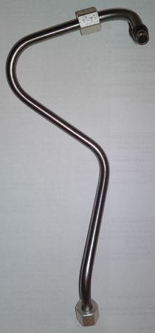
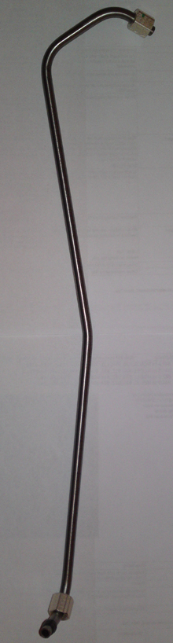
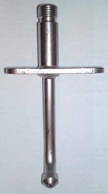
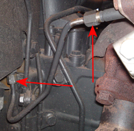

The purpose of the test is to check the dosing unit's dosing amount.
Dosing amount's reference value: > 250 ml.
If the dosing amount is below 250 ml during the test this may be due to a clogged dosing unit and it must be cleaned, this can be done using the subtest "Cleaning of dosing unit"
Replace the injection line with a new one every time it has been dismantled.
Get test injection line and test injection valve needed for the test, this can be done via a Mercedes-Benz truck dealer.
Injection line with part number A 541 140 08 55 for the following engine alternatives: 541.9, 542.9, 900.9, 902.9,924.9, 926.9. See figure below!

Injection line with part number A 457 140 11 55 for the following engine alternatives: 457.9. See figure below!

Injection valve with part number A 000 140 03 68. See figure below!

Prepare a collection container for AdBlue that holds at least 1 litre and hose that fits on the test injection valve.
Test conditions:
Parking brake applied:
Engine off.
Ignition on.
Connect external compressed air to the truck's compressed air system.
Procedure:
Connect the test instrument to the diagnostics socket.
Tilt the cab according to the manufacturer's instructions.
Remove the injection line to the dosing unit. See figure below!

Install the injection line and injection valve for suitable engine alternative and connect a collection container with hose that fits on the injection valve. Make sure that the collection container stands securely on the floor.
Check test conditions and start the test.
After the test is done, measure the amount of AdBlue in a measuring beaker and check that it is more than 250 ml.
Remove the test equipment and install a new injection line.
The function is done.
If the function fails, check the test conditions and repair any faults.